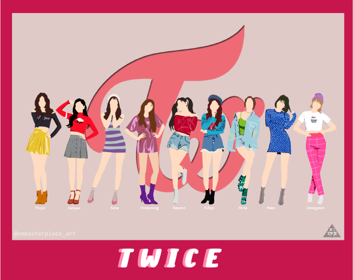

KPOP


¿Que es el kpop?

K-Pop. (abreviatura de Korean popular music, en inglés
o música popular coreana, en español) Un género musical
que se nutre de la mezcla de estilos como el pop, hip hop,
la música electrónica o el R&B está ganando seguidores
en tiempo récord; se trata del denominado 'K-Pop', o lo
que es lo mismo, música popular de Corea del Sur, un
fenómeno de masas que trasciende las barreras musicales
convirtiéndose en una subcultura para adolescentes.
Origenes
Comenzó a emerger, con gran fuerza, a partir de los años 90. Fue en esta década cuando surgieron los primeros grupos coreanos con cierta tendencia a sonidos occidentales. Los más conocidos fueron Seo Taiji and Boys. A pesar de todo, el año que marcó un punto de inflexión en todos los aspectos fue 1992.
¿Cuál es la razón? La música popular de Corea del Sur comenzaba a sufrir cambios bruscos, añadiendo elementos tales como el rock, el rap o el tecno. De esta manera, el debut de Seo Taiji and Boys (rock) y otros grupos de hip-hop hicieron que todo comenzara a tomar forma. El éxito cosechado por ellos y por grupos similares como Panic marcaron las bases de la generación de K-Pop que actualmente conocemos.
Empresas del espectaculo
En el mundo del K-pop, los grupos están totalmente «fabricados»; pasan por un intenso proceso de preparación y ensayo para que sean perfectos cuando se presentan al público. Las empresas más importantes de la industria del pop coreano, que son como sellos discográficos, son S. M. Entertainment —detrás de los grupos H.O.T, S.E.S. y Girl’s Generation , entre otros— YG Entertainment,Big hit Entertainment, detrás del famoso grupo BTS y llevan principalmente grupos con un trasfondo de hip-hop.
es una compañía de entretenimiento establecida YGEntertainment, es una compañía de entretenimiento
en 1995 por Lee Soo-man. Actualmente es una de surcoreana, fundada en 1996 por Yang Hyun-suk con
las compañías de entretenimiento más grandes sede en Seúl. La empresa actúa como una discográfica,
de Corea del Sur. La compañía opera como sello agencia de talentos, marca de ropa, marca de cosméticos,
discográfico, agencia de talentos, productora de empresa de gestión de eventos y producción de conciertos.
música, empresa de producción de conciertos, y En la actualidad, su lista de artistas incluyen Big Bang,
destacados artistas de K-pop comoKangta, S.E.S., Dara, Epik High, Akdong Musician, Winner, iKON, Sechs Kies,
BoA, TVXQ, TRAX, CSJH The Grace,Super Junior, Jinusean, Blackpink, Treasure, entre otros. Además de
Girls' Generation, J-Min, Shinee, f(x),Henry actores y actrices que incluyen a Lee Jong Suk.
Zhou Mi, EXO, Red Velvet, NCT, SuperM y
anteriormente a artistas como H.O.T, Fly to the Sky,
Shinhwa.
S M ENTRETAIMENT: Y G ENTRETAIMENT:

BIG HIT ENTERTAINMET:
Big Hit Entertainment, es un sello discográfico de Corea del Sur fundado en febrero de 2005 por Bang Si-hyuk, antiguo productor y compositor de JYP Entertainment, y también conocido por el nombre Hitman Bang.La discográfica cuenta entre sus artistas actuales al solista Lee Hyun y los grupos BTS y TXT.